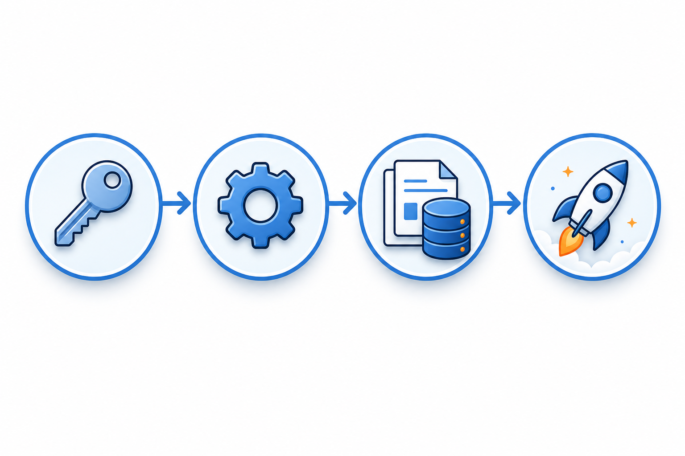
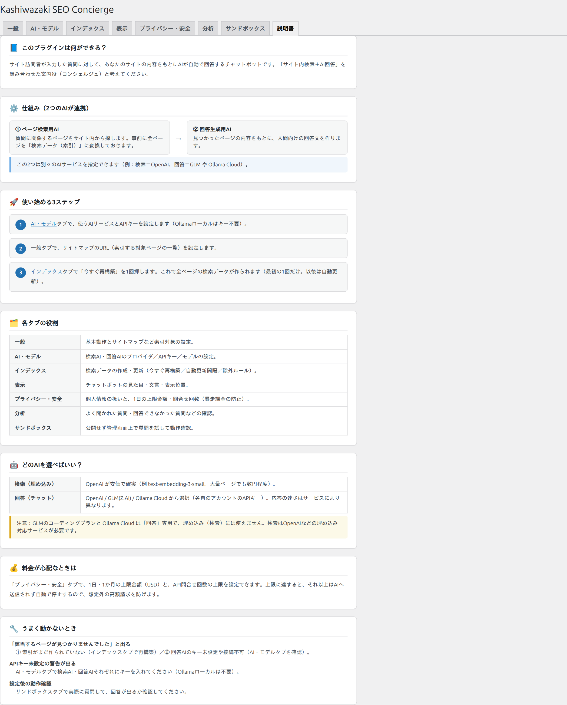

Kashiwazaki SEO Concierge マニュアル

あなたのWordPressサイトに「サイト内AIコンシェルジュ」を設置するプラグインです。画面の右下に小さなチャットボタンが表示され、訪問者が質問すると、AIがサイト内のもっとも適したページを探して、やさしい言葉で案内します。
仕組みはシンプルです。まずサイトのページをAIが読み込んで「索引（インデックス）」を作ります。訪問者が質問すると、その質問に意味的に近いページを索引から探し（検索AI）、見つかったページの内容をもとに回答文を作って案内します（回答AI）。検索結果のキーワード一致ではなく「意味」で探すので、表現が違っても適切なページにたどり着けます。
このマニュアルの読み方 — はじめての方は、まず「仕組みと用語」で全体像と言葉の意味をつかみ、つぎに「インストール・初期設定」のとおりに進めれば、公開までたどり着けます。
主要機能
サイト内AIチャット
画面右下のフローティングチャット。訪問者の質問に対し、サイト内の最適なページをAIが案内します。スマホでは小さな「💁」ボタンになります。
意味で探す検索
sitemap.xml と llms.txt を読み込んでページを索引化。キーワード一致ではなく「意味」で関連ページを探します。
マルチAI・コスト管理
検索AIと回答AIに別々のサービス（OpenAI / GLM / Ollama）を指定可能。1日・1か月のコスト上限など安全機能を内蔵。

ゼロから公開までの5ステップ
初心者の方でも、次の5ステップで公開できます。各ステップの詳しい手順は「インストール・初期設定」で解説します。
準備：WordPress 6.0+ / PHP 8.0+ と、AIサービス（OpenAI など）のアカウント＋APIキーを用意します。
AI設定：「AI・モデル」タブで、検索AIと回答AIのサービス・APIキー・モデルを設定します。
索引作成：「インデックス」タブでサイトマップを指定し、「今すぐ再構築」でページを索引化します。
公開前テスト：「サンドボックス」タブで想定質問を入力し、回答・候補ページを確認します。
公開：サイトを開いて右下のチャットが動けば完了です。見た目は「表示」タブで調整できます。
管理画面の地図（8つのタブ）
設定は WordPress 管理画面の左メニュー「Kashiwazaki SEO Concierge」にまとまっています。8つのタブの役割は次のとおりです。
| タブ | 役割 |
|---|---|
| 一般 | サイトマップ／llms.txt のURL など全体に関わる基本設定 |
| AI・モデル | 検索AI・回答AIのサービス／APIキー／モデルの設定（詳細） |
| インデックス | 索引の再構築・定期再構築・除外ルール（詳細） |
| 表示 | チャットの見た目・文言・アイコン・表示するページ（詳細） |
| プライバシー・安全 | コスト上限・回数上限・保存日数など（詳細） |
| 分析 | 質問・回答の履歴と集計（詳細） |
| サンドボックス | 公開前に想定質問でテストする場所 |
| 説明書 | 管理画面内に組み込まれた簡易マニュアル |

「説明書」タブとこのHTMLマニュアルの関係 — 管理画面の「説明書」タブは、設定中にすぐ見られる要点だけの簡易マニュアルです。いま読んでいるこのHTMLマニュアル（docs/）は、スクリーンショットや図を交えた詳しい完全版です。迷ったらまずこのHTMLマニュアルを参照してください。

動作要件
- WordPress 6.0 以上
- PHP 8.0 以上
- AIサービス（OpenAI など）のアカウントとAPIキー（利用は従量課金）